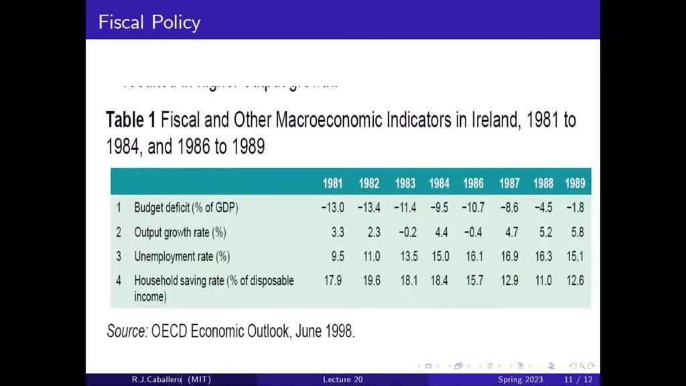

Lecture 24: IS-LM and Expectations
基础 IS–LM 用当前收入解释消费、用当前产出与利率解释投资，便于抓住短期需求机制，但对“现在”的权重较高。第 24 讲让家庭和企业考虑未来收入、未来利润和未来利率，再把这些预期放回 IS–LM。
本页对照用户提供的 11 页 PPT 与官方逐字稿。课件封面为 Lecture 24: IS-LM and Expectations，截图内沿用的 Lecture 20 页脚不是本页的讲次编号。课件提到教材第 15、16 章，也不是课程第 15、16 讲。
| 分析对象 | 原来的简化 | 本讲加入 |
|---|---|---|
| 消费 | 当前可支配收入 Y−T | 金融财富、人力财富、未来收入与贴现条件 |
| 投资 | 当前 Y 与 r | 机器未来利润现值、折旧、未来利率与融资约束 |
| IS | 当前 Y、T、r、G | 预期未来 Yᵉ、Tᵉ、rᵉ、Gᵉ |
| LM | 央行设定利率 | 形式保持不变，预期主要移动 IS |
本讲为封闭经济、价格黏性的短期需求模型，不把净出口和 UIP 同时塞入这张 IS–LM 图。用实际利率 r 分析真实消费与投资；课堂简化中预期通胀给定为零，名义政策利率与 r 相同。若通胀预期变化，需另行转换，不能无条件令 i=r。
永久收入理论强调：家庭会考虑较长期能够获得的收入，而非每次工资到账都同比例改变消费。生命周期理论强调：年轻、工作成熟期与退休期的收入不同，家庭有跨时期平滑消费的动机。这是模型机制，不是假定每个人都能无约束借款。
总财富分为金融财富与人力财富。金融财富是金融及其他可交易资产的当前价值减去债务；人力财富是预期税后劳动收入的现值，属于未来赚钱能力的估值。
Fₜ 是净资产存量，不能再把同一资产的未来现金流重复加一次。Hₜ 只统计劳动收入，不把已经体现在金融资产价值中的股息再算成人力财富。这里的 W 是总财富，不是前面工资设定模型中的名义工资。
上式以预期路径代入折现，是课程的简化，未给出严格的风险定价公式。预期未来税后劳动收入更高，通常提高 H；给定收入路径时，实际贴现率更高则压低 H。
未来收入不错，不等于今天就能把它花掉。银行可能不愿凭未来工资提供足够贷款；一些家庭储蓄很少，必须按当期现金收入消费。因此，更现实的消费函数同时保留财富与当前可支配收入。
这里把当前收入单列，是对流动性约束和现金流作用的行为描述，不是在财富会计上把同一收入加两遍。不同家庭的两个渠道权重不同，不能把某个统一消费比例机械用于所有人。
| 变化 | 财富渠道 | 当前现金流渠道 |
|---|---|---|
| 未来就业收入预期改善 | 人力财富提高，消费可能提前增加 | 今天工资未必改变 |
| 一次性现金补助 | 增加的终身资源有限 | 受约束家庭可能增加较多当期消费 |
| 净资产价格下降 | 金融财富减少，消费承压 | 当期工资未必改变 |
早期消费函数中的自主消费 C₀，可以概括一部分财富、信心和未来预期变化。本讲不是推翻当前收入的作用，而是解释 C₀ 背后为什么会变。
比较相同的当期收入增量：如果只持续一期，总财富只增加一笔；如果持续很多期，人力财富增加的是一串收入的现值，所以一般更能提高当前消费。
例如剩余十年、r=0，若一次性多得 1 万元且平均分配到十年，每年消费增加 1000 元；若今后十年每年都多得 1 万元，每年消费可增加 1 万元。现实有不确定性、预防性储蓄与融资约束，反应不会恰好等于此例。
“持久变化更重要”比较的是相同当期增量、不同持续期限；若一次性冲击金额极大，其作用也可以很大。不能省略金额和持续时间的比较基准。
本讲 I 是购买机器等实物资本的投资，不是买股票或债券。企业需要比较今天机器价格与其未来预期利润现值。课件把机器价格标准化为 1，并用几何折旧 δ 描述机器逐年损耗。
Π 是每单位仍在运作的机器产生的实际利润，δ 是折旧率。按课件时点，第一期利润不乘折旧因子，第二期乘 1−δ，第 j 期乘 (1−δ)ʲ⁻¹；折现则分别经过 j 个增长因子。不要把 π 通胀与 Π 利润混淆。
持续较高的预期利润提高 V；持续较高的实际利率压低 V。机器仍需支付安装等成本、还可能受风险和融资条件影响，因此 V>1 是简化的项目比较，不是现实投资的完整决策规则。
一个未来看起来很赚钱的项目，也可能因为企业今天缺钱而无法启动。银行对项目的判断可能比企业保守，留存利润可以提供内部融资，所以当前利润和当前销量仍会影响投资。
这与消费函数的扩展相似：家庭既看财富又看现金收入，企业既看项目现值又看当前现金流。早期写 I(Y,r)，现在把未来 Y、未来 r 的影响更多放进 V。
折现两年后的利润，需要两期增长因子。企业也可利用当前市场上的相应期限贴现信息，不必独自猜每一个未来短率。但实际现金流应使用相容的实际、风险调整贴现条件，不能把名义国债收益率未经转换就当成机器项目的实际回报要求。
A 是总需求函数，包含消费、投资与政府购买。上标 e 在此把预期未来一整条路径压缩成一个代表变量；课件是一个易于比较静态的捷径，不是已经求解的完整多期一般均衡模型。
Y 和 r 是当前图的轴上变量。T、G 与 Yᵉ、Tᵉ、rᵉ、Gᵉ 则是当前 IS 的参数。画一条给定 IS 时，未来预期必须先保持不变。
| 参数变化 | 给定当前 r 时的 IS 方向 | 主要解释 |
|---|---|---|
| G↑、Yᵉ↑ | 右移 | 当前政府需求或未来收入/销量预期提高 |
| T↑、Tᵉ↑ | 左移 | 当前或未来税后资源减少 |
| rᵉ↑ | 左移 | 未来贴现更重，财富和项目现值下降 |
| rᵉ↓ | 右移 | 未来融资与贴现条件改善 |
Gᵉ 的正向作用是其他预期固定时的课件局部关系。现实永久提高政府支出可能同时改变未来税收、利率与央行反应，不能只取一个符号就断言总效果。
在未来利率预期不变时，今天短暂降息只改变整条贴现路径中的一小段，消费与投资反应可能较小。图中把这种较弱的“仅当前利率”敏感度画成更陡的 IS。
较小的 b 表示当前利率单独变化的需求作用较弱，IS 更陡。消费平滑也可能减弱当前收入反馈，从而降低乘数。两者都可增强图中这种陡峭特征，但这取决于行为参数，不是“任何预期模型都必然比任何静态模型更陡”的数学定理。
暂时加税可能主要压低当前现金流，持久加税还会降低人力财富；暂时 G 增加虽直接进入需求，但诱发消费的反馈可能较小。这些比较均须固定其余预期。
| 发生什么 | 当前 IS 图上怎样表示 | 固定什么 |
|---|---|---|
| 只降低当前 r | 沿原 IS 向右下移动，LM 下移 | 未来利率与收入预期等不变 |
| 只降低预期未来 rᵉ | IS 右移 | 当前 r、其他预期不变 |
| 预期未来 Yᵉ 提高 | IS 右移 | 当前政策与其他预期不变 |
| 当前和未来利率都降低 | LM 下移，同时 IS 右移 | 不能再称为只沿一条曲线移动 |
一个新闻可以同时改变多个参数。不能因为新闻与“利率”有关，就一律只画 LM；也不能因为未来发生变化，就把图的横轴改成未来产出。横轴始终是今天的 Y。
央行只降低当前 r，LM 下移，经济从 A 沿原 IS 到 B。若还让家庭和企业相信未来利率将持续较低、未来经济会改善，则 rᵉ↓、Yᵉ↑，IS 再右移，经济可以到达更高产出的 C。
前瞻指引就是通过政策沟通影响市场对未来条件的理解。是否有效取决于可信度、所传递的信息及实际约束，不能把央行一句话等同于已经实现的未来结果。
相反，当前加息若被认为很快逆转，长期融资条件可能收紧不多。课件讨论的是 2023 年课堂背景与机制，本页不据此判断今天的利率路径。
政府减少当前购买 G，会直接减少需求、使 IS 左移。加入预期后，若市场同时预期未来利率更低、财政风险减轻或未来收入更好，IS 又可能受到反向推动。
总效果取决于各项作用的强度。如果预期改善弱，产出仍下降；如果改善较强，可以抵消甚至超过直接收缩。财政支出减少本身并没有变成需求增加。
多数财政紧缩仍有短期收缩作用。预期是否改善、央行是否配合、融资风险和其他环境都很重要；不能把“提升信心”作为无需证据的万能解释，也不能仅凭同时发生的增长就推出因果。
PPT 第 10 页列出爱尔兰 1981–1984、1986–1989 的财政和宏观指标，原表来源为 OECD Economic Outlook, June 1998。下表按截图数值转录，未补造缺失的 1985 年。
| 指标 / 年份 | 1981 | 1982 | 1983 | 1984 | 1986 | 1987 | 1988 | 1989 |
|---|---|---|---|---|---|---|---|---|
| 预算收支 / GDP，%（负值为赤字） | −13.0 | −13.4 | −11.4 | −9.5 | −10.7 | −8.6 | −4.5 | −1.8 |
| 产出增长率，% | 3.3 | 2.3 | −0.2 | 4.4 | −0.4 | 4.7 | 5.2 | 5.8 |
| 失业率，% | 9.5 | 11.0 | 13.5 | 15.0 | 16.1 | 16.9 | 16.3 | 15.1 |
| 家庭储蓄率 / 可支配收入，% | 17.9 | 19.6 | 18.1 | 18.4 | 15.7 | 12.9 | 11.0 | 12.6 |

1986 到 1989 年，赤字比例缩小而产出增长改善；家庭储蓄率总体降低，但不是逐年单调下降。失业率在 1987 年仍上升，随后下降，不能写成整个后期一直恶化或已经立即恢复充分就业。
课程用该案例说明预期改善可能抵消财政整顿的直接收缩。表中是增长率，不是产出水平；同样，几组同时变化的数据不足以单独识别财政整顿的因果效果，更不能外推为任何时期、任何国家紧缩都能促增长。
r=0，剩余消费期为十年，可以无约束平滑消费。一次性多得 2 万元与十年每年多得 2 万元，对每年消费的作用有何区别？
金额与期限已写明；有借贷约束或不确定性时，不能直接套用这个比例。
机器价格 1，每年利润 Π=0.12，δ=0.08，实际利率长期恒为 4%。按本讲时点求 V。若长期 r 升到 6%？
前者恰好覆盖价格，后者简化净现值为负。这里利润没有变，下降来自贴现。
自编需求为 A=40+0.6Y−100r+0.2Yᵉ−50rᵉ。初始 r=0.04、Yᵉ=100、rᵉ=0.04。求 Y；若只把 r 降到 0.02？再同时令 Yᵉ=110、rᵉ=0.02 呢？
第一步沿原 IS，第二步改变未来参数使 IS 右移。未来产出是给定预期，不是本题要求另外求解的实际未来均衡。
沿用上一题初始参数，把当前自主政府需求减少 5，同时预期 Yᵉ 从 100 升到 120、rᵉ 从 0.04 降到 0.02，当前 r 不变。求 ΔY。若没有预期改善呢？
本例恰好抵消，不是净扩张。净方向需要计算，不能只凭“信心改善”四个字回答。
只提高未来税收预期 Tᵉ，当前 T、G、r 都不变，是 LM 移动还是 IS 移动？
预期税后资源减少，IS 左移；当前利率政策未变，LM 不动。在课程行为假设下当前产出下降。
先区分当期变量与未来参数，再区分现金流与贴现率，最后把直接政策作用与预期反应分别相加。预期影响需求，也曾通过工资设定影响供给；本讲图形集中在需求端，不重画 Phillips 曲线。
| 符号 | 含义 | 阅读提醒 |
|---|---|---|
| \(W_t,\ F_t,\ H_t\) | 总财富、金融净财富、人力财富 | W=F+H；W 在此不是工资，H 在此不是增长模型的有效劳动。 |
| \(Y_t^{L,net},\ N\) | 税后劳动收入、剩余收入或消费期数 | L,net 表示劳动收入净额；N 在本页例子是期限，不是就业人数。 |
| \(C_t,\ Y_t-T_t,\ C_W\) | 消费、当前可支配收入、消费对财富的偏导 | T 为净税收；当前现金流和财富渠道并存。 |
| \(I_t,\ K_t,\ V_t,\ \Pi_t,\ \delta\) | 实物投资、资本、机器利润现值、利润、折旧率 | Π 为利润；π 为通胀。课件第一期利润不乘折旧因子。 |
| \(r_t,\ r^e,\ i,\ \bar{r}\) | 当前实际利率、未来实际利率预期、名义利率、央行设定的实际利率 | r≈i−πᵉ；本讲课堂简化取预期通胀为零。 |
| \(A,\ Y,\ T,\ G\) | 总需求函数、当前产出、净税收、政府购买 | A 在本讲不是长期增长模型的技术水平。 |
| \(Y^e,\ T^e,\ r^e,\ G^e\) | 未来收入、税收、利率、政府购买的预期参数 | 上标 e 是预期，画当前 IS 时先固定这些参数。 |
| \(a,\ \alpha,\ b\) | 线性例子的自主需求、当前收入反馈系数、当期利率敏感度 | 本节为说明斜率的自编参数，不是实证估计。 |
| \(\Delta,\ \sum,\ \prod\) | 变化量、求和、连乘 | 现金流现值相加，贴现增长因子相乘。 |